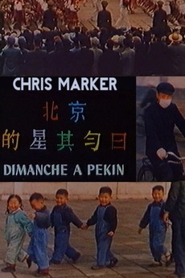
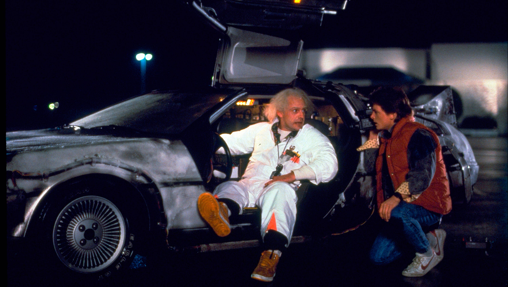
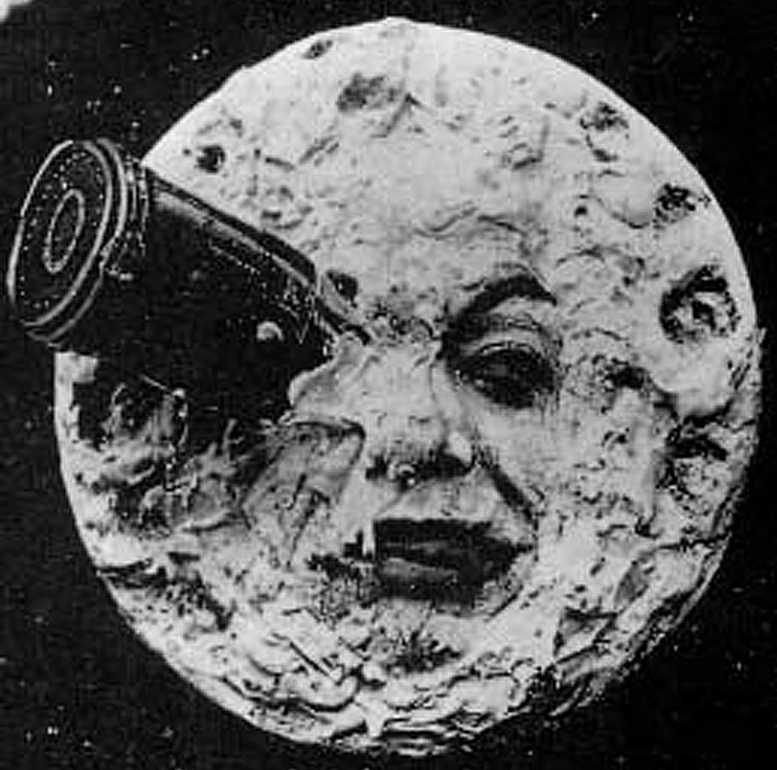

"Cinema, like any other art, is like a big tree with many, many branches. Some are bigger, some are smaller, but all of them are important, and the smallest ones sometimes are more important than the big ones — because they catch the light, the sun, they feed the big lump of the tree. We want to help and protect those little branches of the big tree.
theater screening
NOW PLAYING

Sunday in Peking
Director Chris Marker begins by recounting his childhood dream of visiting the city of Peking, a city he was once only able to admire in books. The viewer is taken on a journey through this city, as if experiencing it from the mind and through the eyes of Marker.

Back to the Future
Marty McFly, a typical American teenager of the Eighties, is accidentally sent back to 1955 in a plutonium-powered DeLorean "time machine" invented by a slightly mad scientist. During his often hysterical, always amazing trip back in time, Marty must make certain his teenage parents-to-be meet and fall in love - so he can get back to the future

A Trip To The Moon
An association of astronomers has convened to listen to the plan of Professor Barbenfouillis, their president, to fly to the moon. With the one dissenting voice quashed by Barbenfouillis and the other members, the plan is approved with Barbenfouillis choosing five others to accompany him. Most of the preparation for the trip is in building the vessel and launching mechanism, which resemble a large bullet and a large gun respectively. They have to find a way to get out of their alien predicament to get back home safely.

Thelma & Louise
Louise is working in a diner as a waitress and has some problems with her boyfriend Jimmy, who, as a musician, is always on the road. Thelma is married to Darryl who likes his wife to stay quiet in the kitchen so that he can watch football on TV. One day they decide to break out of their normal life and jump in the car and hit the road. Their journey, however, turns into a flight when Louise kills a man who threatens to rape Thelma. They decide to go to Mexico, but soon they are hunted by American police.